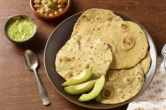

Kasi Avocado and Rotti dish.

This is our Kasi Avocado and Rotti dish enjoy it with pack of chips,
for a filling meal.
Ingredients of our Avocado and Rotti dish.
- Fresh ripe avocado
- Natural rock salt
- Flour
- Spring water
Preparation steps of our dish.
- Mix your flour and water to make a dough.
- When your dough is ready, prepare a pan with hot oil.
- Roll the dough into thin slices of circles.
-
- Fry each side of the Rotti for about 3 min at high heat.
- Cut avocado into two halves, and mix it in bowl.
- Add a pinch of salt, and enjoy.